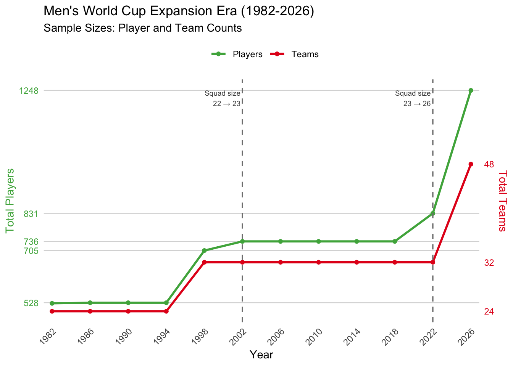
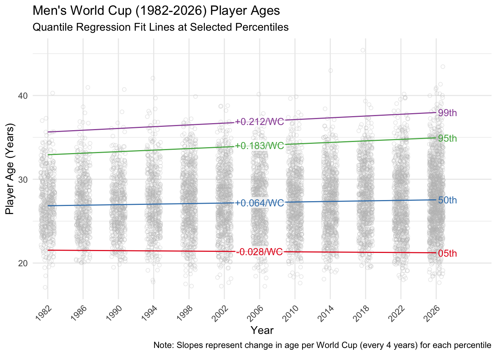
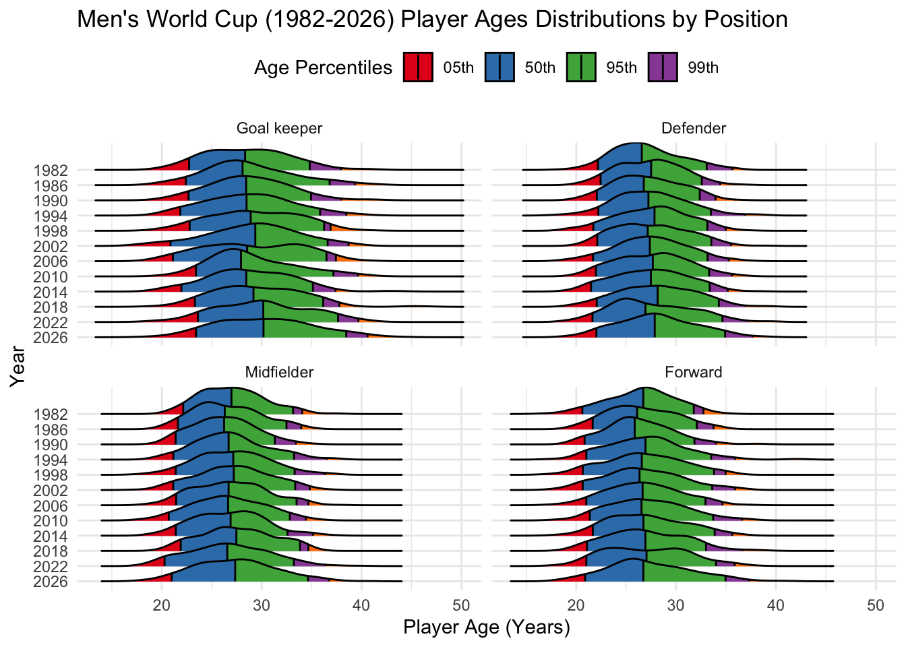
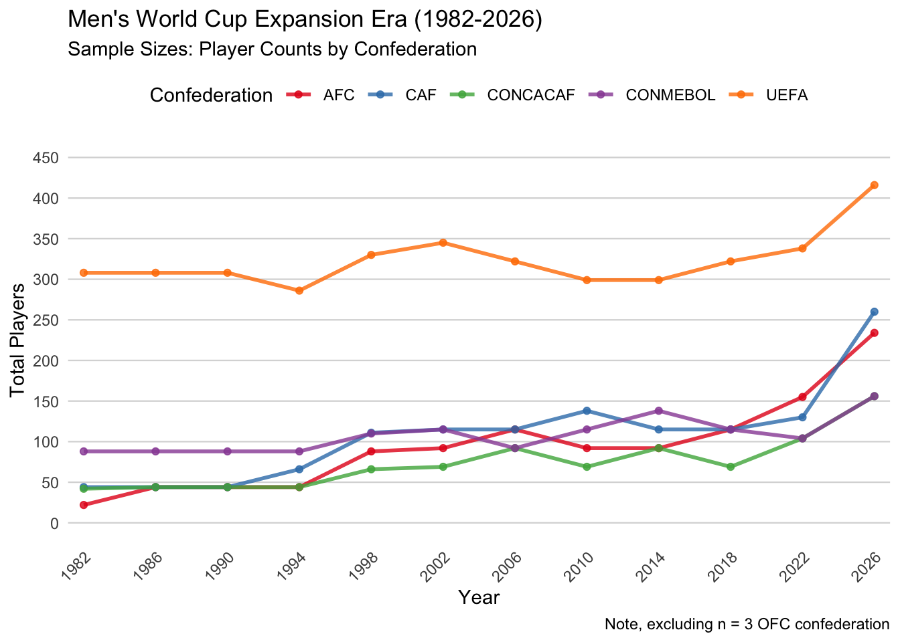

The 2026 Men’s World Cup will feature a record number of players over age 40 — nearly as many as all prior World Cups combined.
And just below 40 years old, players like the 38 year old Lionel Messi are also drawing attention for their staying power.
Is it just a bias in attention, as Ronaldo and Messi happen to be (likely) coming to the end of their unusually long careers at the same tournament? Or are we really seeing an increase in older World Cup players?
Are men’s World Cup squads getting older, and is there an increase in longevity?
This can be broken into two different questions, and I’m primarily interested in the second one:
(1) Men’s World Cup squads getting older could be examined with trends over time in central summaries likes means or medians.
(2) “Longevity” as I am imagining it is the more interesting aspect, but a bit more complicated to conceptualize. To focus on the oldest players, I don’t want an arbitrary cutoff like 40 and just counting players above that threshold; I also don’t want to focus on a singular outlier of the oldest player at each tournament. I will use upper percentiles (or in statistics: quantiles), similar to how economic tracking of income over time might focus on the changing value of income of the upper 5% (aka the .95 quantile or 95th percentile) or upper 1% (aka the .99 quantile or 99th percentile).1
We will further clarify these ideas of longevity (and it’s distinction from just mean/median getting older) when we get into analysis techniques.2
I will use a dataset all players named to World Cup squads from the 1930-2022 World Cups from the World Cup database (© 2026 Joshua C. Fjelstudl, Ph.D., CC-BY-SA 4.0 license). In addition, I added the 2026 players from web scrapping Wikipedia. More Data Details are further below in the Appendix, and are fully documented on the separate github repository for this project.
Assumptions about player data
I am considering any player named to a squad as a World Cup player (that is, not distinguishing playing time or excluding unused squad members), and calculating their age at each World Cup from the start date of that tournament.
Conceptually I am interested in topics about training, recovery, and general wellness leading to sustained high performance into older ages. That’s quite a complicated question I can’t really address with this data. Here we are just trying to first establish if there really are any signs of increasing player longevity. But I want to make explicit the following assumption:
I am broadly imagining the players selected for each squad as the best available for that team/country. That is, a player is on a squad because they are high performing, and therefore if they are older they would represent the kind of high performing longevity I am interested in.
There could be other forces at work in how managers select players for a squad (e.g., nostalgia for formerly great players that fans or teammates want to stay on the squad). It may not be anything about players changing, but just the willingness of managers to select older players. While I would not totally discount these possibilities, winning should be the primary motivation of all managers and that may ultimately tip the scales over these other considerations, so I would like to at least talk about the data with the assumption that players are the best possible selections.
In addition, players have to play as a team, and different managers may have different philosophies and balances in constructing a team. Teams are also drawn from the men in a country (leaving aside some complications of players with multiple potential eligibility, where a player must ultimately make a single, final commitment), and different countries may also have different demographic factors (e.g., differences in generation sizes) and football development factors (e.g., if there were particular periods of time they began investing more into development).
We can somewhat improve our representation of at least some of these team-level considerations by representing players as being clustered within squads, which will change standard error calculations and therefore confidence intervals. When available to (relatively easily) implement, clustering by squad within a year will be ideal; but given the fun and exploratory nature of this project, I will note that at times this becomes overly burdensome and I made a choice to give up some accuracy/precision for keeping the scope of this project manageable.
Finally, as the tournament has expanded to more teams over time, it’s possible that these newer teams (who would have been outside of qualification prior to expansions) may differ in how they select players, and those team differences may contribute to differences in players over time. Some follow up analyses will attempt to address some of these alternative explanations.
World Cups 1930-2026
Although there is great variability in individual player ages (calculated from the start date of each tournament), a smoothed trend line of age has been generally increasing over time (with the notable exception of a dip in the decades immediately following World War II).
I had decided (a priori / before looking at this data) to focus my analysis to the time periods decades after the end of World War II. In addition to suspending the World Cup during the 1940’s, I would expect a number of lingering effects on potential players, in particular a limited pool of older players in the decades to follow.
World War II potential effects on player age
Specifically, there would have been greater injury and mortality among military-aged men in countries involved in the war, so it seems reasonable to suspect that would have left fewer potential best players in their 20’s-40’s for the next couple decades when World Cup tournaments resumed.
It may also be reasonable to suspect other influences, such as those military-aged generations being able to devote less time and energy to sports during their developmental years compared to later generations who were young children during the war or born after it.
Both of these aspects would be external shocks that favored youth in the decades to follow, and then after that time period it could have made it look like squads were getting older just as a correction to these influences.
While I am not testing any why about age increasing, as noted above I am conceptually more interested in a general increase in longevity that could arguably be due to more interesting (to me) aspects like training, recovery, and wellness, rather than attributable to an external shock like war. So I would like to avoid analyses including these immediate post-war years that could have such an easy alternative explanation.
In terms of the article/Instagram representation of longevity of 40+ year old players, the first appeared in 1970 (Lev Yashin was an unused squad member for the Soviet Union), the oldest in 2018 (Egypt’s Essam El-Hadary at over 45 years), but the number of players at or even near 40 seems to have increased in recent years. There were seven men 40+ at the start of the 2026 tournament — compared to just nine total in all prior years.3
Players 40+ years old in the 2026 tournament
Based on age at the start date of the tournament.
| 2026 World Cup Players 40+ Years Old | |||
| Name | Team | Position | Age |
|---|---|---|---|
| Craig Gordon | Scotland | Goal keeper | 43.4 |
| Cristiano Ronaldo | Portugal | Forward | 41.3 |
| Guillermo Ochoa | Mexico | Goal keeper | 40.9 |
| Luka Modrić | Croatia | Midfielder | 40.8 |
| Edin Džeko | Bosnia and Herzegovina | Forward | 40.2 |
| Manuel Neuer | Germany | Goal keeper | 40.2 |
| Vozinha | Cape Verde | Goal keeper | 40.0 |
But as discussed, drawing a line right at 40 also seem a bit arbitrary — and we can see that recent years seem to have many more older players just below this threshold (potentially even when taking into account the greater number of players per tournaments in more recent years).
Expansion Era (1982-2026)
I will limit my analysis to World Cup tournaments from 1982 until 2026. The 1982 World Cup could be referred to a the beginning of an “expansion era” of the tournament, as it increased from 16 to 24 teams. This format change is far enough out from the shadow of WWII to hopefully minimize those direct influences (someone born at the end of WWII in 1944 would be 38 years old by the 1982 tournament), as well as providing a larger sample size of players, so it thus serves as a good conceptual cut point.
Sample size details
Specifically, the tournament expanded in 1982 to 26 teams and a total of 526 players (unusually, a couple of the 22 squad spots went unused that year, but the total number of players was 528 for the next three tournaments). In the years since, the tournament experienced additional expansions in the number of teams and a upticks in squad size (from 22 to 23 and eventually 26), reaching 1248 players on 48 teams in 2026.

World Cups 1982-2026: Are men’s World Cup squads getting older?
Age distributions in tournament years had small positive skews (all <= .43), and means and medians were generally quite similar.
Age distribution at each tournament year

Using a linear regression fit line during the expansion era, predicted mean player age was increasing by .07 years or 25 days at each tournament since 1982.4 Collectively, this shows an increase from an average predicted age of 27.01 in 1982 to 27.78 in 2026, a bit over 3/4ths of a year increase - not a massive increase, but a non-trivial cumulative result that players are getting a bit older.
Graphing the linear regression

But this increase in mean age cannot address the second and more interesting question about changes in longevity.
For this, we turn to quantile regression.
From percentile explorations to quantile regression
Quantile regression is new to me, so this was a learning experience!
I was initially hitting a bit of a roadblock:
I had visually explored trends in percentile values calculated per year. I had looked at lower percentiles to confirm that changes in mean age were not being driven by just avoiding selecting youth; if anything, lower percentiles were flat or trending slightly downwards, that is selecting even younger players. So I felt confident in saying that increases in mean age were not just driven by avoiding youth.

But I was more interested in representing longevity itself with upper percentiles. The 95th and 99th percentiles just intuitively seemed like ideal cutoffs (the upper 5% and 1% of age at each tournament, respectively). When looking at the actual ages corresponding to these cutoffs in the 2026 World Cup (35.2 and 38.6 years old), they matched my prima facie idea of the kind of longevity I wanted to represent.
| Older Age Percentiles, 1982 vs 2026 | ||||||
| Year | 80th | 85th | 90th | 95th | 99th | Max |
|---|---|---|---|---|---|---|
| 1982 | 30.0 | 30.8 | 31.9 | 33.2 | 35.6 | 40.3 |
| 2026 | 31.7 | 32.5 | 33.8 | 35.2 | 38.6 | 43.4 |
| Change | 1.6 | 1.6 | 1.9 | 2.0 | 3.0 | 3.2 |
I saw a consistent pattern of increases in the upper percentiles, but it was most dramatic in these very most upper percentiles.

But beyond these graphs and calculating changes at the end points, I was initially stumped as to how to further represent these changes, particularly how to summarize them into statistics. And how to extend it to considerations of other variables, like a player’s position. I wanted something like a linear regression slope, but for some kind of longevity measure rather than a mean. 🤔
Enter quantile regression, particularly as outlined by Roger Koenker, and implemented in his quantreg package in R. This seemed like a great set of approaches for this question.
So this is an exploration and learning experience. I am a bit unsure (as I am stepping into new analyses with somewhat complicated clustered data and later exploring some interaction effects) or knowingly doing not-quite-ideal analyses (particularly with respect to some limitations for standard error calculations / analyses that cannot represent the clustered data without creating custom code that will be computationally intense, as discussed below), but I want to float some ideas. I’m also going to take more of an explaining/teaching tone to parts of this as I am teaching myself.
World Cups 1982-2026: Are men’s World Cup squads increasing in longevity? Quantile regression approach
With quantile regression, instead of representing the slope of change in mean age over time, we can consider the change in age over time of any particular quantile or percentile.
First, it’s worth noting that a quantile regression prediction of the median (aka the 50th percentile or .50 quantile) does not really conceptually differ from our linear regression mean prediction — by either measure, central age is increasing a bit over time, and in very similar ways.
Mean vs median prediction lines
You didn’t believe me? So similar! 😂

But we want to examine the slopes over time of different quantiles or percentiles of the age. Given this new quantile regression framework, we can actually further refine or clarify our research questions and separate our ‘longevity increasing’ second question into two components:
Location shift of longevity: The slope of change in age over time for the 95th or 99th percentile can represent that the older players are getting older.
But this may be a part of an overall “location shift” of just getting older where the center of age is also increasing (mean/median ages are going up, as are the oldest ages) consistent with the first overall research question of “squads getting older”; it could be that the whole distribution of age shifts in its location, so players at any point (median, 95th or 99th percentiles) are all getting older over time. Thus, we need to distinguish a second aspect:Shape shift of longevity: Difference of the slopes of age over time of these upper percentiles compared to or relative to changes for the rest of the distribution would tell us that there is a change in the shape of the distribution of age. If the slope of age over time for the 95th percentile of age is greater than the slope of age over time at the median, than it is indicating that small number of players are getting increasingly or relatively older above and beyond any possible overall age increases elsewhere in the distribution. In terms of the shape of the distribution of age, it’s not about (just) a location shift but (also) a shape shift with the upper tail of the distribution stretching out.
To consider using quantile regression, a first check can be if slopes at different quantiles do seem to differ. In addition to clustering players by their squads (specifically the particular team by year), we will use quantreg summary.rq functions to estimate standard errors empirically through bootstrapping.
Do we need quantile regression?
If a quantile regression shows us that we have no differences in the slopes of age over time for any particular percentile of age, then there is very little need to continue to modeling each of these other percentiles separately. But if we see different slopes for the upper percentiles compared to the median, this may hint at a “shape shift of longevity” possibility that there is a minority of the very oldest players outlasting prior age norms, and it is worth investigating these quantile regression results further.
As in the linear regression, the slopes represent the predicted change for each year since 1982.5 We can find the coefficients for the fit lines across all percentiles (that is, quantiles from .04 to .99 by .05 increments).6 In the plot below, the different quantiles are represented along the x axis, and the values of slope (in units per year) for each of those quantile regressions is shown on the y axis and represented with the black dots and dashed line (and grey confidence intervals); the red represents the coefficients and confidence interval from the linear regression for comparison.
We see that the slope of age over time does differ by quantiles of age (the line of slopes by quantiles is not flat), and does differ from the mean prediction of a linear regression slope (it is outside the red bounds).

Further details on interpreting the graph
Specifically, at a quantile around .5 (the median) the slope does not differ from the linear regression mean predictions (represented by the red lines) because it’s is well within those red bounds. However, the lowest quantiles are differing from these predictions, and generally do not differ from zero (the horizontal black line) — indicating that the ages among the youngest players selected are not changing at each World Cup. But of primary interest is the upper quantiles that show greater slopes, indicating that the oldest players are not only getting older consistent with a “location shift of longevity” like at the mean and median, but that upper minority of the oldest players may be getting older at an even greater rate than other parts of the distribution of age, consistent with the possibility of a “shape shift of longevity”.
Therefore, a linear regression of the mean or a quantile regression of the median slope do not represent the changes in age over time for the more extreme ages and could obscure these differences, and we need to use quantile regression to represent these upper percentiles of interest.
To make it more concrete, we can graph the equations of some of the quantile regression lines on the original data (converting to changes in age per World Cup tournament “/WC”, that is every four years) to more clearly see that both the 95th and 99th percentiles demonstrate not only positive slopes for a “location shift of longevity”, but they may have even steeper slopes and stretching the upper part of the distribution faster than the upward trajectory of the rest of the distribution, consistent with the possibility of a “shape shift of longevity”.

Looking at the significance testing of each of these slopes seperately, we can confirm the “location shift of longevity”: There is a significant increase in age over time at the 95th and 99th percentiles, but also at the median or 50th percentile.
| Player Age by Percentile | ||||||||||
| Quantile regression slopes and predicted ages, with clustered bootstrapped SEs (600 resamples) | ||||||||||
|
Slope (per WC cycle)
|
Predicted Age, 1982
|
Predicted Age, 2026
|
||||||||
|---|---|---|---|---|---|---|---|---|---|---|
| Age Δ /WC | SE | 95% CI | p | Age | SE1 | 95% CI | Age | SE1 | 95% CI | |
| 05th | −0.028 | 0.019 | [−0.064, 0.008] | .131 | 21.5 | 0.1 | [21.3, 21.8] | 21.2 | 0.1 | [21.0, 21.5] |
| 50th | 0.064 | 0.021 | [0.024, 0.105] | .002 | 26.8 | 0.1 | [26.6, 27.1] | 27.5 | 0.1 | [27.3, 27.8] |
| 95th | 0.183 | 0.022 | [0.139, 0.227] | <.001 | 32.9 | 0.2 | [32.6, 33.3] | 34.9 | 0.1 | [34.7, 35.2] |
| 99th | 0.212 | 0.055 | [0.104, 0.319] | <.001 | 35.6 | 0.3 | [35.0, 36.3] | 38.0 | 0.3 | [37.3, 38.6] |
| 1 Note: Predicted value SEs are empirically calculating from bootstrapped samples | ||||||||||
To make it concrete, we can say that it predicts to a 2 year increase in the 95th percentile of age (from 32.9 to 34.9) during the 44 years of the expansion era of the tournament, and a 2.4 year increase in the 99th percentile of age (from 35.6 to 38.0).
To formally test the “shape shift of longevity”, we would want to test the difference of the slopes at the upper percentiles compared to at the median. The quantreg package in R, however, does not have the ability to conduct these tests with bootstrapped standard errors that take into account clustering.7 I’ll note that this could be custom built, but given the time to build and the challenges with the processing time/speed it would require to run such code compared to the intended scope of this project, I am going to skip this.8
Instead, I will use models with standard errors estimated without bootstrap resampling and without taking into account the clustering in calculating these slope differences to at least give some hints of whether we see differences, acknowledging the limitations with these very “rough SE-limitation comparisons”.9
I compared the slopes at the median, 95th, and 99th percentiles (using these “rough SE-limitation comparisons”), and there are overall differences. Using follow up pairwise comparisons (with the Holm correction for multiple comparisons), we can see that both the 95th percentile and 99th percentile slopes are significantly larger than the median, but do not differ from each other.
| Pairwise Comparisons of Slopes Across Quantiles | |||
| Wald tests, analytic (nid) SEs — not bootstrapped or cluster-adjusted | |||
| F | p (raw) | p (Holm-adjusted) | |
|---|---|---|---|
| τ=0.50 vs τ=0.95 | 21.774 | <.001 | <.001 |
| τ=0.50 vs τ=0.99 | 9.368 | .002 | .004 |
| τ=0.95 vs τ=0.99 | 0.436 | .509 | .509 |
We have support for the “shape shift of longevity” that oldest players are getting increasingly older, there is a stretching of the tail of the distribution (with the caveats of the “rough SE-limitation comparisons”).
Further visualzing the shape shift of longevity
We can visualize this by considering the changing distribution of age over time. The upper tail (as seen in those green and purple sections of the distribution) is stretching out and moving further to the right than the shifts of the median.

We could also visualize this with a bit on animation.10 We can keep a constant marker of the starting point (1982 as a dashed line) as our comparison for the median, 95th percentile, and 99th percentile, and then observe the new position of each of those stats over time, and keep a trace of these shifts by drawing a horizontal distance line to the new position at each year versus the 1982 starting point. As can be seen, there is location shift — ages are increasing a bit at the median, 95th percentile, and 99th percentile in most years and therefore overall (i.e., if we imagine an ‘average’ shift of each). But there is also a shape shift: The upper tail of the distribution stretches out further to the right, and the increases in the 95th and 99th percentiles (again, visualized by the trace of each horizontal distance shift) not only tend to increase over time, they are also greater than the shift of the median. This is the shape shift of longevity.
But are these increases in longevity perhaps limited to or just driven by certain kinds of players?
Is it just goal keepers?
Although it was noted that a surprising number of older players on 2026 squads were field players (that is, the non-goal keeper positions of defenders, midfielders, and forwards), in general many of the oldest players at the 2026 and prior World Cups have been goalkeepers, as they “typically face less physical wear and tear than outfield players, allowing many to extend their careers well into their late 30s and 40s.” Thus, it’s reasonable to ask if it’s just goal keepers driving these longevity trends.
When we consider different position, we should be mindful that their sample sizes per tournament year do get quite small, particularly for goal keepers. Thus the 99th percentiles in particular may become quite unstable and should be interpreted with a bit of caution; I will focus more on the 95th percentile as our primary longevity metric, and even among goal keepers we should note it still represents very small numbers of players.
Sample size by position details
No position group exceeded 200 before 1998, indicating that a 99th percentile represents fewer than the oldest two individuals. Further, prior to the 2026 tournament expansions, there were only between 69 and 99 goal keepers per tournament.

We can implement this with a time by position interaction, and focus on slope of time for each position.11
We see consistent patterns: Although goal keepers are older overall, all positions show “location shift of longevity” in the direction of ages of their upper percentiles increasing. And again, at least with respect to the raw values of the slopes those upper percentiles may be increasing at greater rates, potentially consistent with “shape shift of longevity” (with the exception of the particularly-concerningly-small-sample size of the 99th percentile for goal keepers, although their 95th percentile shows a trend consistent with others).

Using bootstrapped standard errors and taking into account clustering within squad, we can calculate confidence intervals and significance testing for each of these longevity slopes to test the “location shift of longevity”.
| Longevity by Position | ||||||||||
| Quantile regression slopes and predicted ages, with clustered bootstrapped SEs (600 resamples) | ||||||||||
|
Slope (per WC cycle)
|
Predicted Age, 1982
|
Predicted Age, 2026
|
||||||||
|---|---|---|---|---|---|---|---|---|---|---|
| Age Δ /WC | SE | 95% CI | p | Age | SE | 95% CI | Age | SE | 95% CI | |
| τ = 0.50 | ||||||||||
| Goal keeper | 0.155 | 0.043 | [0.071, 0.238] | <.001 | 28.0 | 0.3 | [27.5, 28.5] | 29.7 | 0.3 | [29.1, 30.3] |
| Defender | 0.072 | 0.029 | [0.015, 0.129] | .013 | 27.0 | 0.2 | [26.6, 27.5] | 27.8 | 0.2 | [27.5, 28.1] |
| Midfielder | 0.054 | 0.030 | [−0.006, 0.113] | .076 | 26.5 | 0.2 | [26.1, 26.9] | 27.1 | 0.2 | [26.7, 27.5] |
| Forward | 0.029 | 0.041 | [−0.050, 0.109] | .472 | 26.4 | 0.3 | [25.9, 26.9] | 26.8 | 0.3 | [26.2, 27.3] |
| τ = 0.95 | ||||||||||
| Goal keeper | 0.204 | 0.077 | [0.053, 0.354] | .008 | 35.5 | 0.5 | [34.5, 36.5] | 37.7 | 0.4 | [36.9, 38.6] |
| Defender | 0.185 | 0.041 | [0.104, 0.266] | <.001 | 32.5 | 0.3 | [32.0, 33.1] | 34.6 | 0.3 | [34.0, 35.1] |
| Midfielder | 0.118 | 0.045 | [0.031, 0.205] | .008 | 32.7 | 0.3 | [32.1, 33.3] | 34.0 | 0.3 | [33.5, 34.5] |
| Forward | 0.261 | 0.057 | [0.149, 0.374] | <.001 | 31.9 | 0.4 | [31.1, 32.8] | 34.8 | 0.3 | [34.2, 35.5] |
| τ = 0.99 | ||||||||||
| Goal keeper | 0.065 | 0.172 | [−0.272, 0.401] | .706 | 39.5 | 1.2 | [37.2, 41.8] | 40.2 | 1.0 | [38.3, 42.2] |
| Defender | 0.213 | 0.105 | [0.006, 0.420] | .043 | 34.7 | 0.7 | [33.4, 36.0] | 37.1 | 0.7 | [35.7, 38.4] |
| Midfielder | 0.197 | 0.080 | [0.041, 0.354] | .014 | 34.2 | 0.6 | [32.9, 35.4] | 36.3 | 0.5 | [35.4, 37.2] |
| Forward | 0.284 | 0.119 | [0.051, 0.516] | .017 | 34.2 | 0.7 | [32.8, 35.7] | 37.4 | 0.7 | [35.9, 38.8] |
Only goal keepers and defenders show significant increases in median ages.
Consistent with the “location shift of longevity”, we see that all positions show a significant increase in age at the 95th percentile. (And with hesitancy we can note that all but the small sample size goal keepers show a significant increase at the 99th percentile.)
To test the differences of the slopes at the median and 95th percentile for each position, we again have the “rough SE-limitation comparisons” issue. We will use the same limitation-acknowledging-approach of not using clustering and bootstrapped resampling for standard errors. With these constraints in mind, we do see tentative support for the “shape shift of longevity” among both forwards and defenders, but not for midfielders and not for the small number of goal keepers.
| Pairwise Comparisons of Median vs 95th Percentile Slopes, for each Position | |||
| Wald tests, analytic (nid) SEs — not bootstrapped or cluster-adjusted | |||
| F | p (raw) | p (Holm-adjusted) | |
|---|---|---|---|
| Goal keeper | 0.386 | .535 | .535 |
| Defender | 6.913 | .009 | .026 |
| Midfielder | 2.234 | .135 | .270 |
| Forward | 13.847 | <.001 | <.001 |
Detailing and further visualzing the location shift and shape shift of longevity by position
We can again visualize these changes in the distribution over time, but now separately by position, and interpret them in context with the testing.

Taken together, it appears that the median age is getting older for defenders but not for forwards, but both defenders and forwards show increasing longevity (“location shift of longevity” based on significant slopes at the 95th percentile) and their oldest players are getting increasingly or relatively older (“shape shift of longevity” based on greater slopes at the 95th percentile compared to the median, with limitations in testing). Thus, both of these positions show increases in longevity.
Midfielders show a “location shift of longevity” (based on significant slopes at the 95th percentile), but that increase in the oldest players is not growing at rate significantly greater than their (not-significant) change at the median (that is, not strong support for a “shape shift of longevity”). Thus, we see some slight increases in older midfielders, but not as much support for increasing or unusual minority of particularly long lasting players — a bit of a lack of support for the full ideas of longevity increases.
The results for the goal keepers are a bit ambiguous, at least in part due to their smaller sample size, but perhaps also because they showed different patterns of age even in the beginning of the expansion era. In terms of pure coefficient size, they had the largest “location shift of longevity” with the largest increase at median ages and the second largest increase at the 95th percentile. But their oldest players were not getting increasingly or relatively older (no “shape shift of longevity” because their 95th percentile slope did not significantly differ from the median). However, goal keepers already had the largest gap between their median and 95th percentile values starting all the way back in the 1980s. (This can also be visually confirmed with the graph “Quantile Regression Fit Lines at Selected Percentiles”.) That is, earlier on they already had more of a right tail stretched distribution or shape difference compared to other positions, there were already a lot of exceptionally older goal keepers and their trends over time are, arguably, not increasing that stretch but may be maintaining it. Thus, goal keepers already had exceptional longevity and a different shape, but it may not be accelerating (or we may frame it as other positions seem to be catching up or beginning to get distributions of age shaped more like goal keeper’s distributions).
Overall, there is some support for longevity shape shifting increases among defenders and forwards, a lack of support for any exceptional longevity for midfielders (no shape shifting, but just some overall location shifting at the upper percentile), and ambiguous results for the already-older and smaller sample size of goal keepers. But ultimately, a position analysis was trying to assess if the story of overall increases in longevity in both location shift and shape shift were misleading and just being driven by a goal keepers, and we can definitively say that is not the case, and at least forwards and defenders are contributing.
But what about the alternative explanation that it may just be that teams in the expanding formats select older players?
Ruling out alternative explanations: Different squad choices because of different teams?
Expanding field of teams?
As the World Cup has expanded, perhaps it is the additional teams who make different selections — for example, teams who rarely get to go to the World Cup may reward veterans who have stuck with their national program but have rarely or never been able to play in a World Cup. One fairly straightforward way to investigate claims about different “types” of teams making different age selections would be to think separately about the more traditional or “core” teams (those who frequently qualify for the World Cup) and the “non-core” teams who are either newly or rarely appearing in World Cup tournaments. Essentially, do the location and especially shape shift of longevity hold true for both types of teams?
While only Brazil has qualified for all 23 World Cups, since 1930 there are 10 teams with at least 15 appearances that I will define as the “core” teams.12 The “core” teams account for 180 squads (appearances of a team in a particular year) in the expansion era of the World Cup. The remaining 74 “non-core” teams participating in the expansion era account for 353 squads (appearances of team per year), including 15 teams with single appearances.13
Core teams
| Most World Cup Apperances (1930-2026) | |
| Core Team | Total apperances |
|---|---|
| Brazil | 23 |
| Germany (incl West Germany) | 21 |
| Argentina | 19 |
| Italy | 18 |
| Mexico | 18 |
| England | 17 |
| France | 17 |
| Spain | 17 |
| Belgium | 15 |
| Uruguay | 15 |
If we repeat the primary analyses for core and non-core teams (and similar to the position analysis, focusing on just the 95th percentile as splitting reduces the sample size), we can see that for each of these types of teams there is a significant increase in ages at the 95th percentile (for core teams, the increase at the median is not significant while for non-core teams the median increase is significant).
| Player Age by Percentile, Core Teams | ||||||||||
| Quantile regression slopes and predicted ages, with clustered bootstrapped SEs (600 resamples) | ||||||||||
|
Slope (per WC cycle)
|
Predicted Age, 1982
|
Predicted Age, 2026
|
||||||||
|---|---|---|---|---|---|---|---|---|---|---|
| Age Δ /WC | SE | 95% CI | p | Age | SE1 | 95% CI | Age | SE1 | 95% CI | |
| 50th | 0.031 | 0.026 | [−0.019, 0.081] | .229 | 27.4 | 0.2 | [27.1, 27.7] | 27.7 | 0.2 | [27.3, 28.2] |
| 95th | 0.214 | 0.056 | [0.104, 0.324] | <.001 | 33.1 | 0.3 | [32.5, 33.7] | 35.4 | 0.4 | [34.6, 36.2] |
| 1 Note: Predicted value SEs are empirically calculating from bootstrapped samples | ||||||||||
| Player Age by Percentile, Non Core Teams | ||||||||||
| Quantile regression slopes and predicted ages, with clustered bootstrapped SEs (600 resamples) | ||||||||||
|
Slope (per WC cycle)
|
Predicted Age, 1982
|
Predicted Age, 2026
|
||||||||
|---|---|---|---|---|---|---|---|---|---|---|
| Age Δ /WC | SE | 95% CI | p | Age | SE1 | 95% CI | Age | SE1 | 95% CI | |
| 50th | 0.086 | 0.025 | [0.038, 0.134] | <.001 | 26.6 | 0.2 | [26.2, 26.9] | 27.5 | 0.1 | [27.3, 27.8] |
| 95th | 0.186 | 0.032 | [0.122, 0.249] | <.001 | 32.8 | 0.2 | [32.4, 33.3] | 34.9 | 0.2 | [34.5, 35.2] |
| 1 Note: Predicted value SEs are empirically calculating from bootstrapped samples | ||||||||||
In testing the differences of slopes (again, with the limitation that we cannot take into account the clustering by teams, nor using bootstrapping to estimate the standard errors), the slope at the 95th percentile is greater than the slope at the median for both core teams (F(1, 4899) = 13.28, p < .001) and non-core teams (F(1, 12247) = 10.50, p < .001). Thus, there is support for the shape shift of longevity among both core and non-core teams, it is not just the expanding pool of teams driving longevity increases in older players.
Confederation differences?
Another change in World Cup format is a shift in the numbers of teams by confederation (which maps to regions of the world). In particular, relatively more spots have been given to African (CAF) and Asian (AFC) confederation teams over the expansion era.
Overall, there is not strong evidence of any noteworthy differences by confederation or the overall findings of location and shape shifts of longevity being driven just by the inclusion of more African and Asian confederation teams. Although Europe (UEFA) does show the smallest magnitude of longevity increases (the smallest slope at the 95th percentile), it still shows directions of coefficients consistent with the overall story. However, these analyses should be interpreted very tentatively given how small sample sizes are when split by confederation.
Confederation differences in longevity, small sample size limitations
Europe (UEFA) is disproportionately represented at the World Cup, and sample sizes for other confederations are quite small particularly for analyses on extremes like the 95th percentile.

If we proceed in an exploratory way regardless, we can see that all confederations show the location shift of longevity, with significant increases in age over time at the 95th percentile — although it is noted that the actual magnitude of change is quite small for the European UEFA confederation. (As before, the confidence intervals and significance testing for each of these longevity slopes to test the “location shift of longevity” were calculated using bootstrapped standard errors and taking into account clustering within squad.)
| Longevity by Confederation | ||||||||||
| Quantile regression slopes and predicted ages, with clustered bootstrapped SEs (600 resamples) | ||||||||||
|
Slope (per WC cycle)
|
Predicted Age, 1982
|
Predicted Age, 2026
|
||||||||
|---|---|---|---|---|---|---|---|---|---|---|
| Age Δ /WC | SE | 95% CI | p | Age | SE | 95% CI | Age | SE | 95% CI | |
| τ = 0.50 | ||||||||||
| AFC | 0.287 | 0.066 | [0.157, 0.417] | <.001 | 25.1 | 0.5 | [24.1, 26.0] | 28.2 | 0.4 | [27.5, 28.9] |
| CAF | 0.025 | 0.075 | [−0.122, 0.172] | .743 | 26.3 | 0.5 | [25.3, 27.4] | 26.6 | 0.4 | [25.8, 27.4] |
| CONCACAF | 0.104 | 0.074 | [−0.042, 0.250] | .162 | 26.7 | 0.6 | [25.6, 27.8] | 27.8 | 0.4 | [27.1, 28.6] |
| CONMEBOL | 0.096 | 0.043 | [0.011, 0.181] | .027 | 27.0 | 0.3 | [26.4, 27.6] | 28.1 | 0.3 | [27.5, 28.6] |
| UEFA | 0.022 | 0.025 | [−0.027, 0.071] | .384 | 27.3 | 0.2 | [26.9, 27.6] | 27.5 | 0.2 | [27.2, 27.8] |
| τ = 0.95 | ||||||||||
| AFC | 0.331 | 0.086 | [0.162, 0.500] | <.001 | 31.4 | 0.7 | [30.1, 32.7] | 35.1 | 0.4 | [34.3, 35.8] |
| CAF | 0.194 | 0.091 | [0.016, 0.373] | .033 | 32.0 | 0.7 | [30.6, 33.5] | 34.2 | 0.4 | [33.4, 35.0] |
| CONCACAF | 0.243 | 0.112 | [0.024, 0.462] | .030 | 33.6 | 0.7 | [32.1, 35.0] | 36.2 | 0.7 | [34.9, 37.5] |
| CONMEBOL | 0.354 | 0.061 | [0.236, 0.473] | <.001 | 31.9 | 0.4 | [31.2, 32.7] | 35.8 | 0.4 | [35.0, 36.7] |
| UEFA | 0.099 | 0.043 | [0.015, 0.183] | .021 | 33.4 | 0.2 | [33.0, 33.9] | 34.5 | 0.3 | [33.9, 35.1] |
For each confederation, we can see that at least the magnitude of the slope at the 95th percentile is greater than at the median. To actually test these difference of slopes at the median vs the 95th percentile (the shape shift of longevity), we again have the “rough SE-limitation comparisons” issue (that we cannot cluster within squad or easily implement bootstrapping for estimating the SEs) as well as small sample sizes, and thus should interpret these results with some skepticism. But with Holm’s adjustment for multiple comparisons, there is support for the shape shift of longevity only for South America (CONMEBOL).
| Pairwise Comparisons of Median vs 95th Percentile Slopes, for each Confederation | |||
| Wald tests, analytic (nid) SEs — not bootstrapped or cluster-adjusted | |||
| F | p (raw) | p (Holm-adjusted) | |
|---|---|---|---|
| AFC | 0.452 | .501 | .501 |
| CAF | 3.338 | .068 | .203 |
| CONCACAF | 1.738 | .188 | .375 |
| CONMEBOL | 16.942 | <.001 | <.001 |
| UEFA | 4.338 | .037 | .149 |
Overall, we might very tentatively say that nothing about examinations by confederation lead us to believe that the results discussed so far are driven just by African and Asian confederations; all confederations at least show coefficient directions and patterns consistent with the overall findings of location and shape shifts of longevity, and these patterns are significant among South American teams. However, we can acknowledge that the longevity patterns may be the least strong among European teams.
Conclusion
There are small increases in overall ages of World Cup players since the expansion era began in 1982 (the location shift), but the increases in the upper percentiles of age tend to be even greater (the shape shift of longevity).
It cannot simply be explained away as just being among goal keepers, and it is not just among the newer teams qualifying under the expanded format, nor is it driven just by greater representation among historically less-included regions like Africa and Asia because similar patterns exist for all confederations, including South America and (more weakly) Europe.
Thus, World Cup players do seem to be increasing in longevity!
Appendix
Data Details
This analysis used an excellent World Cup database (© 2026 Joshua C. Fjelstudl, Ph.D. published under CC-BY-SA 4.0 license) of the 1930-2022 World Cups, with tables of players, squads, and team performances.14 Player and squad information for 2026 was scrapped from Wikipedia. For some exploratory analyses (not all included in the interest of scope and clarity), I added in some additional measures: Population data came from the WDI package, supplemented with government data for the separate countries of the United Kingdom. FIFA ranking data is unverified and should be treated with caution, but came from an updated version in a comment on Kaggle, and used the most recent ranking at the start of each World Cup. I was initially interested in these measures because I thought they might represent the way the larger pool of teams might be driving differences, but I ultimately found the conceptualization of core vs non-core teams and a bit of a confederation exploration to be a cleaner way to address these topics, which is why these measures are not included in any analyses reported here.
Age was calculated from the date of the start of the tournament, and I included anyone named to a squad, regardless of whether they saw playing time during the tournament.15
The documentation of the data as well as some initial exploratory analysis code are available in a github project repo. But the cleaner, final code for analyses presented here and a replication of the final data set is available in this website’s repo.
Reflections on this Project
This is not an exhaustive or polished analysis. While I hope it demonstrates some of my quantitative thinking, coding abilities, and communication skills in telling the higher-level story, this was primarily an exploratory project-as-a-learning-process:
I was interested in this topic itself, I wanted to practice some web scrapping, I wanted a project to write up to help me build my website, this gave me something to work through to figure out how best to organize a Quarto document, I ended up learning quantile regression, I dove into making some animated graphics, and… it kept me doing something productive while watching way too many World Cup games 😂.
Beyond my learning about quantile regression (which is discussed throughout the post above), I want to document some other reflections on this project while it’s still fresh in my mind, to share my learning journey.
Further notes on this project / what I learned
The resampling for bootstrap SEs in quantreg made this code slow to run when developing and making iterative changes. (That is, when using Render to see a preview on my local.) It seems that the cache functions in Quarto are a bit messy and difficult to troubleshoot or debug, so I instead switched to an approach of saving the models from bootstrapping, switching those Quarto code chunks to “eval: false” and loading the saved models in subsequent code chunks. I took a similar approach to creating the videos of the animated histograms.
As I went through analyses of alternative explanations (position, core vs non core teams, confederation), I was a bit inconsistent in how I modeled them in terms of interactions or split samples. Because this project was so exploratory, the actual analyses were not done in the order presented here, so pieces done at different times had different approaches (some were even started before I began to incorporate quantile regression and I circled back to apply that technique to them later), and I just want to document a few aspects:
Conceptually, a model with an interaction term or models separately by the interacting variable groups will be the same when there are no other predictors in the model — which was the case here.
- With the position analysis, I used interaction terms and emmeans package for pulling out the slopes for each position.
- When doing the core vs non-core teams, I took my code from the overall quantile regression analysis, made it into functions to make it easy to re-use, then split the data into core and non-core samples and used those functions.
- When doing the confederation analysis, I used interaction terms and the emmeans package, but instead of making functions I copy-and-pasted code from the position analysis and just manually updated it with the confederation variable.
Three different ways to do similar things is pretty messy, and ideally I would have stuck to a consistent approach across all three.
Using the interaction code and making it into functions (with the interaction variable a argument that could change) would probably have been the most ideal and easiest to modify if I later wanted to add additional predictors in the model. So planning-lesson-learned, but for the current purposes all of these approaches do get us to the same conclusions, so I did not go back and change or clean up those different coding approaches.
I would also like to document some aspects/examples of how I used AI/LLM (Claude and ChatGPT) in the context of this project, how I think it can (and can’t) be used productively. To distribute across the two for free usage, I tend to use ChatGPT for lower level coding details, and save my usage of Claude (Sonnet 5, usually set to High) for a bit higher level aspects (as I think Claude is better):
- I frequently use ChatGPT to help me speed through minor coding details of data manipulation/transformation/pretty-ing up a table or graph. Often times these are things I ‘know’, things that just a few years ago I would have worked out through a combination of checking my own prior notes and code, the package-specific PDF cheat sheets, and a Stack Overflow search. Now it’s often faster to ask ChatGPT and get a working example to trial-and-error. For example, trying to decide between geom_text or annotate on a ggplot, working through aesthetic preferences for things like the slope labels on top of graphs but needing to nudge some up or down so they were not overlapping, trying to format and change organizational details on gt package tables. When I know what I want, am not depending on the AI/LLM for the big picture organization, and have clear details I can articulate, I find AI/LLMs a great aid.
- Claude was helpful for navigating new packages like quantreg — for example, I wanted something similar to emmeans for breaking down interaction terms, but as applied to quantreg models. I initially found emmeans would not work well with quantreg results, and I started making my own code to pull out a lower order term of the time effect and then relevel the player position to get the slope for each position. This was working pretty well, but as I wanted to do more with those results I kept having to modify my code and was just getting into messy formatting-related issues, so I stepped back and asked Claude if something like this already exists? I learned there was a known bug (preventing it from working well with quantreg) in prior versions of emmeans that was already fixed, so I was able to update that package, give my code to Claude and ask it to help me translate my code into doing the same conceptual process but using emmeans functions. This emmeans result made some further steps easier to do. So, lesson learned that I should have checked on emmeans updates (or other alternatives) earlier and that could be a good thing to ask AI/LLM for information on. But by giving Claude already working code it was much better at translating it to work with emmeans (and I could quickly and easily verify its code was correct). So, overall I could improve that process, but it was a good example of working together with an AI/LLM.
- I turned to Claude to help me learn and implement web scrapping which I had very limited prior experience with. I quickly realized that once you get the R packages to just pull from a website, it’s really just about string parsing by patterns, and Wikipedia formats are pretty great for this. Interesting. Claude was pretty bad at the parsing initially, so I did a bit of my own code clean up and a bit of iterative back and forth with Claude for troubleshooting.
- I also undertook some steps to try to help clean the data to conceptualize how that might be done. It was a bit unnecessary for this particular project, but I had some future projects in mind so I partially pursued this. For example, in scrapping names and trying to divide them into given name and family name, I had Claude help me flag any player name that was more than two words to let me easily sort and view it. This made it clear that there were a number of systematic exceptions to the “last” word being the family name (i.e., de, di, van, von, mac). Adding those and iterating again I learned “ben” when used in a Tunisian name was also the beginning of a family name. Prior conceptual knowledge also helped me manually check the Wikipedia name orders (only South Korea was using the order of family and then given name for most of its players). So a bit of coding and human review together let me get the vast majority of given vs family names correctly separated, but I did not want to spend the time to more exhaustively clean up every last detail. Similarly, I pursued some attempts to match returning 2026 players to the identification numbers assigned by Fjelstudl.
- Most of the conceptual thinking about the data and analyses is my own, but one key use of AI/LLMs here: After I started with explorations of percentile graphs, I was a bit stumped as to what other analyses approaches would be appropriate. Searching around myself was not as productive as I didn’t know what I didn’t know. But I leaned on Claude for some back and forth explanation of my thinking about this particular data and question, including the metaphor of tracking changes in the upper 1% of income over time. It provided a lot of suggestions of different kinds of analyse I might consider (i.e., extreme value theory EVT; survival/duration, sensitivity analysis; GAMLSS distributional regression; quantile regression) and based on some of my own research about these techniques and a bit of back and forth with Claude, I decided I would read up on quantile regression. I found it helpful to get ideas from AI/LLM when I didn’t quite know what I was looking for, but I think exactly how one phrases their instructions and prompts could really drive the suggestions here. I used a lot of language and prompts to emphasize not agreeing with me, being constructively critical, finding ideas and analysis techniques I may not have considered, etc. But I still think there is a lot of risk of it being overly agreeable or confirming my thinking too much and not helping to find novel ideas. But interesting use case to ponder.
- The writing and explanation (and misspellings and type-os) are all my own. I have heard frequent use of the em dash is considered a tell that AI wrote something, which is really unfortunate because I have long been a fan and (over?) user of the em dash — it’s just so handy and another layer on top of parentheses and footnotes and callout boxes, all of which I also (over?) use. And in terms of content, just given some of the things Claude returned in other back and forths (about analyses to consider, for example), it clearly misunderstood very important conceptual details about the data and the meaning, and I frequently had to redirect it, point out mistakes, etc.; AI cannot yet replace a thoughtful approach to data analysis. In addition, I think the process of writing is integral to thinking and learning, which was a primary goal here.
- Finally, please forgive my AI slop image of the old player with a jersey of 40, but I loved it 😂
Footnotes
I will prefer to to use the slightly-more-colloquial term “percentile” over “quantile” in discussions and visuals, just to be a bit more broadly understood.↩︎
As my ability to conceptualize the question was improved by learning new analysis techniques!↩︎
Note a slight difference in definition compared to the FIFA’s article and Instagram post: Uruguay’s Fernando Muslera turned 40 during the tournament — see the “Age at 16 June 2026” notation in the Instagram post. I calculated age for players at each tournament from each tournament start date, so Muslera’s age in my data would be 39.98631. In addition, I looked at all players named to a squads, while the FIFA article focused only on those who saw playing time and therefore excluded unused squad members.↩︎
The coefficient .0174 is the change in age per year. Tournaments are every four years, and there are 365.25 days in each year: .0174 * 4 years/tournament = .07 years increase per tournament and .0174 * 4 years/tournament * 365.25 days/year = 25.36 days increase per tournament. Note that years were calculated as years since 1982 to make the intercept interpretable as the predicted mean age in 1982.↩︎
In this initial graph the slopes are per year simply because we can lean on functions built for quantreg and not need customization. But in later visualizations we will represent slopes by multiplying this coefficient by 4 years so that it will represent the change in age expected per World Cup.↩︎
In terms of pure speed/burning up my local computer memory, I found by .01 problematically slow; the quantreg plot.rq function needs evenly spaced intervals for the plot, and by using .04 to .99 I will get an estimate for .94 and .99 which is close enough for an initial look to my desired 95th and 99th percentile.↩︎
This is just a current, known limitation of the quantreg package, as acknowledged in the anova.rq function help files.↩︎
Specifically, using summary.rq with clustering and bootstrapped SEs can already be a bit slow running on my local machine. While I did not fully build it out, some initial looks at the resampling and processing steps needed to implement this made it clear it would be very slow, and someone building this would really benefit from a greater understanding than I have of how best to program within R from a speed/efficiency perspective, or implement it using parallel processing.↩︎
My standard errors will likely be too small, and therefore my significance testing p-values will be biased downwards increasing the risk of Type I errors.↩︎
The image quality and resolution aspects are not ideal here, but I wanted to include this rough draft as it helped me to make the ideas of shape shift more concrete.↩︎
Conceptually the lower order term of time represents the effect for the position used as the reference group; we can relevel position in repeated models to extract these, but the coding shortcut is to use emmeans package to get each of these slopes. Also, one could also look at the interaction terms to test if the effect of time significantly differed for positions; however, given that I would expect each position to have similar direction of effects, just weaker or stronger, and given the small sample sizes by positions, such comparisons would be under-powered to test small differences. In other words, saying that goal keepers change in age over time at a particular percentile does not significantly differ from the change over time for another position is not particularly convincing when such comparisons are under-powered. For the current goal of assessing if just goal keepers are driving the longevity effects, I would prefer to focus on the slopes for each position separately and make conceptual arguments, rather than using a bunch of under-powered direct tests between positions.↩︎
Note that for this analysis, Germany’s number of appearances is counted by including teams of Germany (1934-1938; 1994-present) and West Germany (1954-1990), and they are considered a “core” team. In contrast, no later country is connected to Yugoslavia nor the Soviet Union for purposes of counting its total appearances given that each split into many countries, i.e., Yugoslavia’s 9 appearances through 1998 are not added to Croatia’s 7 appearances since (and overlapping with) 1998, so Croatia is a “non-core” team.↩︎
Note that two of these were not typical single appearances: “Serbia and Montenegro” qualified as a team in one tournament after the break of up Yugoslavia but before the two separated; similarly, Slovakia has qualified once since the break up of Czechslovakia separated it from Czech Republic.↩︎
At the time of downloading, 2026 data was not yet included.↩︎
As noted above, there are a few seeming inconsistencies can arise based on these definitions: FIFA’s count of eight players over 40 included Uruguay’s Fernando Muslera who turned 40 after the start of the 2026 tournament but before his team’s first game; his age in my data would be 39.98631. They also only referred to players in prior tournaments who earned a cap — that is, played actual time — which would exclude, for example, unused squad members like the first 40+ year old Lev Yashin named to a squad with the 1970 Soviet Union team.↩︎